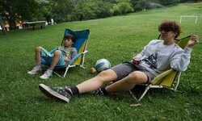
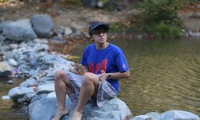
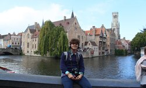
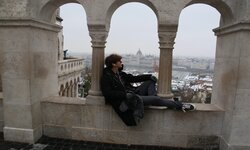
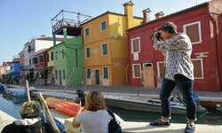
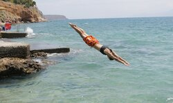
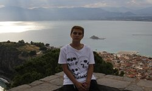
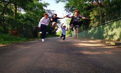

Despina's Personal Web Page
Who am I?
Born and raised in the city of Skopje, North Macedonia. A true enthusiast for traveling and exploring new places. Extrovert with the wish to meet as many people as possible. Fierce competitor in any type of competition. Invested in sports and team games. Art lover and photographer. Student by day, Gamer by night.




Short Biography
My earliest memories can be found just along the coast of the Ohrid lake. Alongside my grandma, in the tiny streets of Ohrid, I discovered my passion for exploring. To this day I hold the city dear to my heart. I made my first friends there and had my grandpa chase me so I can return home after long sessions of playing outside. On the other hand, I spent my summer days in Greece with my other grandparents where I watched every football match and played with the kids I met. I finished primary school in Skopje and was named the student of the generation. From here on achievements followed me everywhere. I got a scholarship in the prestigious international high school "NOVA" and deepened my love for science, literature, photography, and mathematics. Im starting a new journey amongst some of the greatest people I've met and hope that I will excel in the field I've chosen.




